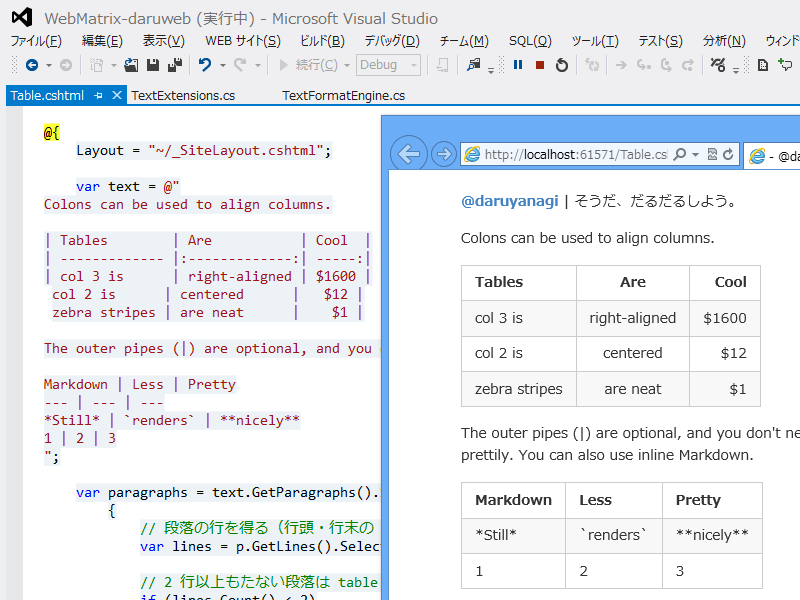

WebMatrix 3: Markdown で GFM table をサポートする
公開日：

GFM（Redirecting...）には本家の Markdown にはない機能が結構盛り込まれているのですが、なかでもテーブルのサポートはぜひ真似したいところ。ちょっと頑張ってみました。
テーブルの仕様は Markdown Cheatsheet · adam-p/markdown-here Wiki · GitHub を参考にしています。
方針
Markdown エンジンは Google Code Archive - Long-term storage for Google Code Project Hosting. を利用し、その前処理としてテーブル記法の部分を検知・処理しちゃいましょう。
今回は
- 変換対象のテキストを段落（ブロック）へ分割
- それぞれのブロックがテーブル記法かどうかを判定
- ブロックをテーブルタグへ変換
という三段階で処理してみました。
ブロックへの分割とテーブル記法かどうかの判定
当該部分を抜き出してみました。
text = text.GetParagraphs().Select(p =>
{
// 段落の行を得る（行頭・行末の | は無視する）
var lines = p.GetLines().Select(_ => _.Trim('|'));
// 2 行以上もたない段落は table ではない
if (lines.Count() < 2)
{
return p;
}
// 1 つ以上の同じ数の | がすべての行に含まれていない段落は table ではない
var count = lines.First().Count(charactor => charactor == '|');
if (count == 0 || lines.Skip(1).Any(line => line.Count(_ => _ == '|') != count))
{
return p;
}
return new Table(p).ToString();
}
).Combine("\r\n\r\n");
GetParagraphs() は string の拡張メソッドとして実装したもので、単に改行2つで分割しているだけです。GFM table では行頭・行末の“|”は飾りなのだそうで、ついでにとっておきます。
テーブルかどうかの判定はちょっと悩んだのですが、
- 2行以上あって
- 行頭・行末以外の“|”の数が 0 ではなく、
- なおかつ、すべての行で数が一致している
ことを今回は条件としました。あってるかどうか自信はないのですが、ここはあとで実装を変えてもいいようにカプセル化しておけばよさそう。
Combine() は 寄り道: string クラスの拡張 - だるろぐ で書いた string の拡張メソッドです。
テーブルクラス
テーブルタグへの変換はだいぶ面倒くさい感じだったので、簡単なクラスにしてみました。
using System; using System.Collections.Generic; using System.Linq; using System.Text.RegularExpressions;enum CellAlignment { Left, Center, Right, }
enum CellMode { Header, Normal, }
class Cell { public string Text { get; set; } public CellAlignment Alignment { get; set; } public CellMode Mode { get; set; }
public Cell(string text) { Text = text; Alignment = CellAlignment.Left; Mode = CellMode.Normal; }
public override string ToString() { var align = Alignment.ToString().ToLower(); var text = Text; // new MarkdownSharp.Markdown().Transform(Text);
switch (Mode) { case CellMode.Header: return string.Format("<th align=’{0}'>{1}</th>", align, text); case CellMode.Normal: default: return string.Format("<td align=’{0}'>{1}</td>", align, text); } } }
class Table { private List<List<Cell>> table = new List<List<Cell>>();
public Table(string text) { foreach (var line in text.GetLines()) { var row = line .Split(new [] { '|', }, StringSplitOptions.RemoveEmptyEntries) .Select(_ => new Cell(_.Trim())) .ToList();
table.Add(row); }
// :— や —: に対応する気がなければ以下のコードは要らない
for (var i = table.Count - 1; i > 0; i–) // 下段から処理 { var row = table.ElementAt(i); var first_cell = row.ElementAt(0);
if (first_cell.Text.IndexOf("—") > -1) { table.ElementAt(i - 1).ForEach(_ => _.Mode = CellMode.Header);
for (var j = 0; j < row.Count; j++) { var cell = row.ElementAt(j);
if (cell.Text.StartsWith(":") && cell.Text.EndsWith(":")) { table.ForEach(r => r.ElementAt(j).Alignment = CellAlignment.Center); } else if (cell.Text.StartsWith(":")) { table.ForEach(r => r.ElementAt(j).Alignment = CellAlignment.Left); } else if (cell.Text.EndsWith(":")) { table.ForEach(r => r.ElementAt(j).Alignment = CellAlignment.Right); } }
table.RemoveAt(i); } } }
public override string ToString() { return "<table>\r\n"
- table.Select(row =>"<tr>" + row.Select(cell => cell.ToString()).Combine() + "</tr>\r\n").Combine()
- "</table>\r\n"; } }
セパレーターとセルの右寄せ・中央寄せ・左寄せ記法への対応がなければ、コードはかなりシンプルだったのですけど。
| Tables | Are | Cool | | ------------- |:-------------:| -----:| | col 3 is | right-aligned | $1600 | | col 2 is | centered | $12 | | zebra stripes | are neat | $1 |
“---”のようなセパレーター列の上の列はヘッダー列として扱いたい。というわけで、素直に上から処理するのではなく、下段から処理。これで処理の終わった列を再参照する無駄が省ける。
右寄せ・中央寄せ・左寄せ記法をみつけたら、同じ行の Cell へアクセスして Alignment プロパティをセット。ForEach() 便利だなぁ。
というか、for 文は消せるはずなので、そっちの方向で今度書き直したい。
課題
セル内の Markdown 記法が解釈されない。
これを直そうと思えば、自分で Markdown のパーサーを書いたほうが早いかなって気がする。何度もテキスト全体を正規表現でナメるのも効率よくないと思うし。
テキストの処理って基本なことだと思うけれど、自分は苦手だなぁ……なにかいい参考書ないかしら。